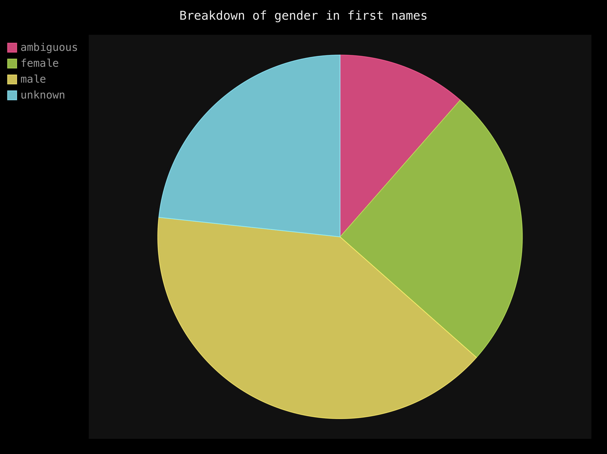
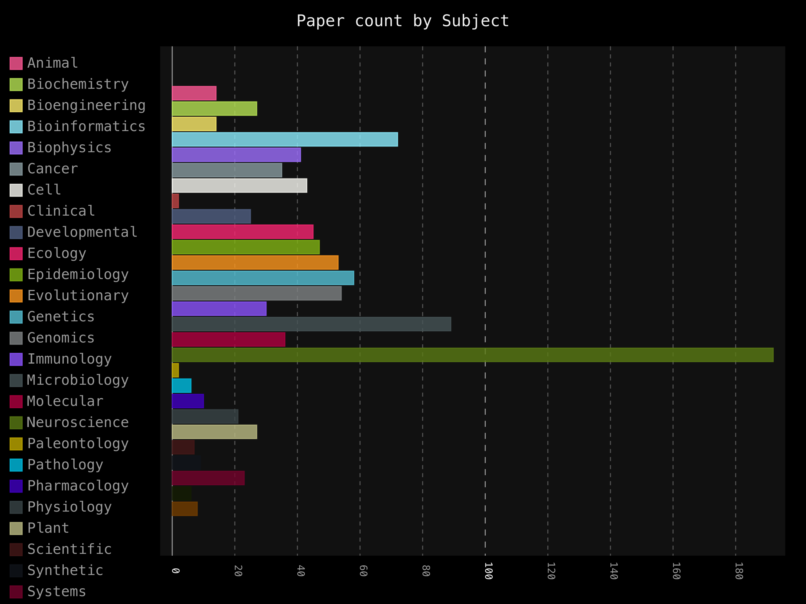
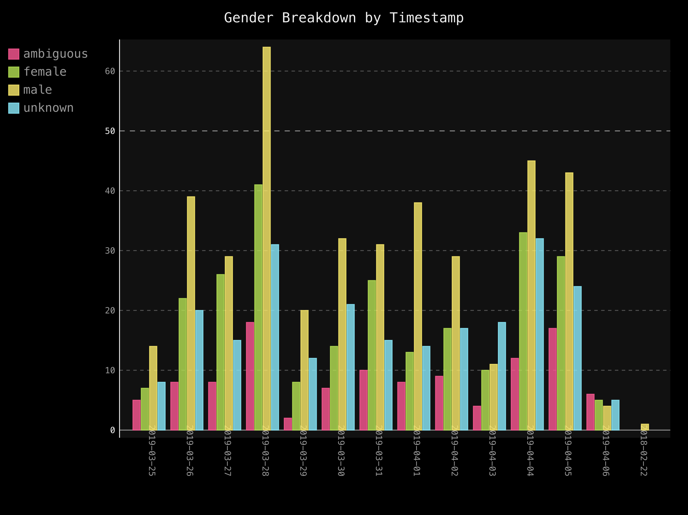
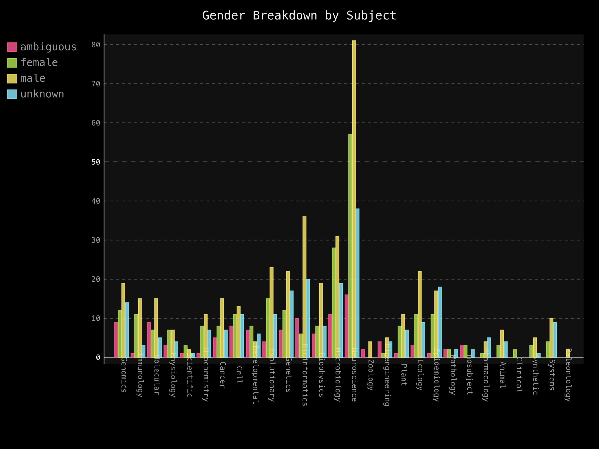

Sbotlite is a twitter bot whose mission is to investigate gender bias in science and promote women scientists.
To do so, Sbotlite automatically retweets papers from biorxiv with female first authors. On top of that,the bot
was used to data mine the Biorxiv archives and produce analysis on
the submissions.
Sbotlite was developed by Vassiki Chauhan, Jean-Hugues Lestang and Sushmita Sadhukha.
The link to the bot Twitter account can be found at: Sbotlite twitter
The link to the Sbotlite account can be found at: Sbotlite github
Below you can see the results of our analysis of 1000 papers. Additionally, Sbotlite tweets statistics on
the gender of 1st authors of biorxiv papers. Currently, the statistics tweeted is the number of detected female first author
divided by the sum of detected female first authors and detected male first authors.

Figure 1: Here we can see the number of articles that were tagged as either Male, Female, Ambiguous
or Unknown. Unknown names could not be identified in any corpus that we used, and Ambiguous names were equally
likely to be male or female. We chose to retweet both female and ambiguous names with Sbotlite!
We also used a Pearson Chi Square test (Chi-square(3) = 165.93, p < 0.001) to determine that we would be highly
to find this result purely by chance,in other words,if all categories were equally represented.

Figure 2: This figure shows us how many articles were tweeted for each of bioarxiv subject categories across 1000 articles. It is important to note that not all articles we analyzed had subject labels!

Figure 3: In this figure we visualize the number of articles with Male, Female, Ambiguous
or Unknown first authors as a function of time. Each tick on the x-axis is a new day and a new
opportunity for equal representation!

Figure 4: The final figure shows the number of articles published by first authors broken down by gender and subject.Our statistical analysis revealed a significant effect of preprint subject (Chi-square(3) = 610.44, p < 0.001).With tools like Sbotlite, it shouldn't be too hard to make this trend significant!